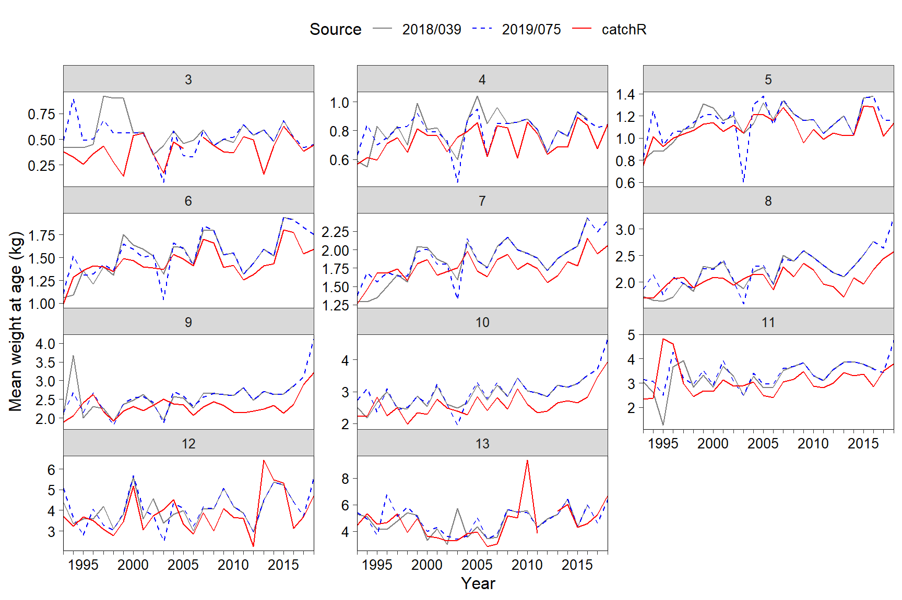
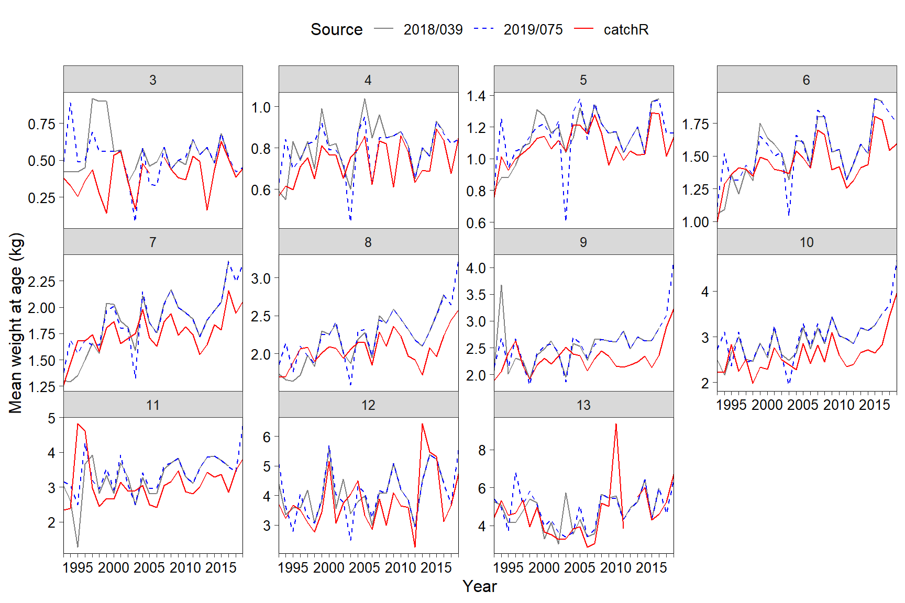

Comparaison des résultats avec les valeurs historiques
Jordan Ouellette-Plante
2021-11-18
1 Objectifs
Comparer les résultats obtenus à ceux des Resdoc précédents
2 Initialisation
# Pour le fichier Rmarkdown
knitr::opts_chunk$set(echo = T, collapse = T, fig.align = "center",
fig.width = 9, fig.height = 6, message = F, warning = F)2.1 Répertoires et infos utiles
temp <- tempfile(fileext = ".R") # https://gist.github.com/noamross/a549ee50e8a4fd68b8b1
knitr::purl(input = "01_preparation_programme.Rmd", output = temp, quiet = T)
## [1] "C:\\Users\\OUELLE~1\\AppData\\Local\\Temp\\1\\RtmpOkjiVo\\file48287dd83c98.R"
source(temp)
rm(temp)
library(kableExtra)
library(RColorBrewer)
dat_resdoc <- "~/Divers_data/Resultats/04_data_resdoc_2002-2019.Rda"3 Ouverture des données
J’ouvre les données historiques et celles issues de catchR.
load(dat_caa_processed); names(caa) # liste de 2 composantes
## [1] "avec_plus" "sans_plus"
load(dat_resdoc); names(resdoc) # liste de 4 composantes.
## [1] "deb" "caan" "waa" "laa"
doc <- c("2018/039", "2019/075") # j'utilise les 2 derniers resdoc comme comparatifs pour l'instant4 Comparaisons
4.1 Titres des axes
if (langue == "fr"){
lab1 <- "Année"
lab2 <- expression("Capture à l'âge ("*10^3*")")
lab3 <- "Source"
lab4 <- "Poids moyen à l'âge (kg)"
lab5 <- "Longueur moyenne à l'âge (cm)"
} else if (langue == "en"){
lab1 <- "Year"
lab2 <- expression("Catch at age ("*10^3*")")
lab3 <- "Source"
lab4 <- "Mean weight at age (kg)"
lab5 <- "Mean length at age (cm)"
} else {
lab1 <- "Année"
lab2 <- expression("Capture à l'âge / Catch at age ("*10^3*")")
lab3 <- "Source"
lab4 <- "Poids moyen à l'âge / Mean weight at age (kg)"
lab5 <- "Longueur moyenne à l'âge / Mean length at age (cm)"
}4.2 graph1: Captures à l’âge
Claude B. utilise un groupe 13+ dans son dernier rapport (Brassard et al. 2020), mais un groupe 13 dans son avant dernier rapport (Brassard et al. 2018).
res <- resdoc$caan %>% filter(source %in% doc)
unique(res$age) # Présence d'un groupe 13+
## [1] "3" "4" "5" "6" "7" "8" "9"
## [8] "10" "11" "12" "13" "13_plus"
res$age <- recode(res$age, "13_plus" = "13+")
ans <- intersect(unique(res$annee), unique(caa$avec_plus$year))
ages <- unique(res$age); ages # les âges 1 et 2 ne sont pas montrées dans les resdocs
## [1] "3" "4" "5" "6" "7" "8" "9" "10" "11" "12" "13" "13+"
ajout <- caa$avec_plus %>%
mutate(source = "catchR",
annee = year,
caan = caan / 1000) %>% # en milliers d'individus comme dans les resdocs
filter(annee %in% ans, age %in% ages) %>%
select(annee, age, caan, source)
ajout2 <- caa$sans_plus %>%
mutate(source = "catchR",
age = as.character(age),
annee = year,
caan = caan / 1000) %>% # en milliers d'individus comme dans les resdocs
filter(annee %in% ans, age == "13") %>%
select(annee, age, caan, source)
caan <- bind_rows(res %>% filter(annee %in% ans), ajout, ajout2)
caan$age <- factor(caan$age, levels = c(3:13, "13+"), ordered = T)
caan$source <- factor(caan$source, levels = c("2018/039", "2019/075", "catchR"), ordered = T)
dim(caan) # 862 obs et 4 var
## [1] 862 4
save(caan, file = paste0(result, "04_caan.Rda"))
rm(ajout, ajout2, res)Je suis prêt pour la figure.
brks_x <- ans
labs_x <- brks_x
labs_x[labs_x %% 5 > 0] <- ""
graph1 <- ggplot(data = caan, aes(x = annee, y = caan, group = source, color = source)) +
geom_hline(aes(yintercept = 0), linetype = 2, color = "grey70") +
geom_line(aes(linetype = source)) +
labs(x = lab1, y = lab2, group = lab3, color = lab3, linetype = lab3) +
facet_wrap(~ age, scales = "free_y", ncol = 3) +
scale_x_continuous(breaks = brks_x, labels = labs_x, expand = c(0,0)) +
theme(panel.spacing.y = unit(0, "lines"),
legend.position = "top") +
scale_color_manual(values = c("grey50", "blue", "red")) +
scale_linetype_manual(values = c(1,2,1)) # catchR a la ligne pleine
graph1
4.3 graph2: \(\overline{pds}\) à l’âge
Pour les autres mesures, Claude B. utilise un groupe 13 et pas un groupe 13+. Je commence par préparer les données.
res <- full_join(resdoc$waa, resdoc$laa, by = c("annee", "age", "source")) %>%
filter(source %in% doc)
unique(res$age) # Absence d'un groupe 13+
## [1] "3" "4" "5" "6" "7" "8" "9" "10" "11" "12" "13"
ans <- intersect(unique(res$annee), unique(caa$sans_plus$year))
ages <- unique(res$age); ages # les âges 1 et 2 ne sont pas montrées dans les resdocs
## [1] "3" "4" "5" "6" "7" "8" "9" "10" "11" "12" "13"
ajout <- caa$sans_plus %>%
mutate(source = "catchR",
annee = year,
age = as.character(age)) %>% # pour que le merge fonctionne
filter(annee %in% ans, age %in% ages) %>%
select(annee, age, waa, laa, source)
dat <- bind_rows(res %>% filter(annee %in% ans), ajout)
dat$age <- factor(dat$age, levels = c(3:13, "13+"), ordered = T)
dat$source <- factor(dat$source, levels = c("2018/039", "2019/075", "catchR"), ordered = T)
dim(dat) # 836 obs et 5 var
## [1] 836 5
rm(ajout, res)Je suis prêt pour la figure.
graph2 <- ggplot(data = dat, aes(x = annee, y = waa, group = source, color = source)) +
geom_line(aes(linetype = source)) +
labs(x = lab1, y = lab4, group = lab3, color = lab3, linetype = lab3) +
facet_wrap(~ age, scales = "free_y", ncol = 3) +
scale_x_continuous(breaks = brks_x, labels = labs_x, expand = c(0,0)) +
theme(panel.spacing.y = unit(0, "lines"),
legend.position = "top") +
scale_color_manual(values = c("grey50", "blue", "red")) +
scale_linetype_manual(values = c(1,2,1)) # catchR a la ligne pleine
graph2 
4.4 graph3: \(\overline{longueur}\) à l’âge
graph3 <- ggplot(data = dat, aes(x = annee, y = laa, group = source, color = source)) +
geom_line(aes(linetype = source)) +
labs(x = lab1, y = lab5, group = lab3, color = lab3, linetype = lab3) +
facet_wrap(~ age, scales = "free_y", ncol = 3) +
scale_x_continuous(breaks = brks_x, labels = labs_x, expand = c(0,0)) +
theme(panel.spacing.y = unit(0, "lines"),
legend.position = "top") +
scale_color_manual(values = c("grey50", "blue", "red")) +
scale_linetype_manual(values = c(1,2,1)) # catchR a la ligne pleine
graph3
waa_laa <- dat
save(waa_laa, file = paste0(result, "04_waa_laa.Rda"))
rm(dat, waa_laa)4.5 graph4: SPAY plot
Suggestion de Noel Cadigan. Voir courriel du 19 avril 2021 par Hugues Benoît. Je m’aide de ce lien
caan$age <- as.numeric(as.character(caan$age))
dim(caan) # 862 obs et 4 var
## [1] 862 4
caan <- caan[!is.na(caan$age), ] # j'enlève les valeurs NA, qui étaient des groupes 13+
dim(caan) # 810 obs et 4 var
## [1] 810 4
unique(caan$age) # parfait
## [1] 3 4 5 6 7 8 9 10 11 12 13
types <- c("Au-dessus de la moyenne / Above average", "Au-dessous de la moyenne / Below average")
sources <- levels(caan$source); sources
## [1] "2018/039" "2019/075" "catchR"
dat <- tibble() # vide initialement
caan$cohort <- caan$annee - caan$age
caan$cohort <- substr(caan$cohort, 3, 4) # pour n'avoir que les 2 derniers chiffres de l'année de cohorte
for (ii in 1:length(sources)){
temp <- caan %>%
filter(source == sources[ii]) %>%
group_by(annee) %>%
mutate(caan_tot = sum(caan)) %>%
ungroup %>%
mutate(caan_prop = caan / caan_tot) %>%
group_by(age) %>%
mutate(caan_mean = mean(caan_prop),
caan_sd = sd(caan_prop)) %>%
ungroup %>%
mutate(spay = (caan_prop - caan_mean)/ caan_sd,
type = ifelse(spay > 0, types[1], types[2]),
lab = ifelse(age == max(age) | annee == max(annee), cohort, NA))
dat <- bind_rows(dat, temp)
rm(temp)
}
brks_x <- 1993:2018
labs_x <- brks_x
labs_x[labs_x %% 5 > 0] <- ""
dim(dat) # 810 obs et 12 var
## [1] 810 12
dat$type <- factor(dat$type, levels = types, ordered = T)
if (langue == "fr"){
lab1 <- "Année"
lab2 <- "Âge"
} else {
lab1 <- "Year"
lab2 <- "Age"
}
track <- tibble(x = 1980:2020,
y = rep(3, length(1980:2020)),
xend = 1980:2020 + 10,
yend = rep(3 + 10, length(1980:2020)))
graph4 <- ggplot(data = dat, aes(x = annee, y = age, size = abs(spay), fill = type)) +
geom_segment(data = track, aes(x = x, y = y, xend = xend, yend = yend),
linetype = 3, colors = "grey70", inherit.aes = F) +
# geom_vline(xintercept = 1993:2020, linetype = 3, color = "grey70") +
# geom_hline(yintercept = 3:13, linetype = 3, color = "grey70") +
geom_point(shape = 21, show.legend = F) +
facet_wrap(~ source, ncol = 1) +
scale_fill_manual(values = c("lightblue", "black")) +
scale_size_continuous(range = c(0,8), ) +
scale_x_continuous(breaks = brks_x, labels = labs_x, expand = c(0,0)) +
theme(panel.spacing = unit(0, "lines")) +
labs(x = lab1, y = lab2) +
geom_text(aes(label = lab), size = 4, vjust = -1, angle = 45, nudge_x = 0.3) +
scale_y_continuous(breaks = 3:13, labels = 3:13) + # pour voir bien les no. de cohortes
coord_cartesian(xlim = c(1992.5, 2018.5), ylim = c(2.75, 13.5))
graph4
rm(dat, track)4.6 Pour la présentation CSAS
Je veux les figures sur 4 colonnes au lieu de 3 comme dans le resdoc.
figures_presentation <- list() # vide initialement
figures_presentation[["caan"]] <- graph1 + facet_wrap(~ age, scales = "free_y", ncol = 4)
figures_presentation$caan
figures_presentation[["waa"]] <- graph2 + facet_wrap(~ age, scales = "free_y", ncol = 4)
figures_presentation$waa
figures_presentation[["laa"]] <- graph3 + facet_wrap(~ age, scales = "free_y", ncol = 4)
figures_presentation$laa
5 Évolution des données
Je regarde l’évolution des données dans le temps, selon les documents de recherche des années 2000.
5.1 graph5: Débarquements
resdocs <- unique(resdoc$deb$source)
dat <- resdoc$deb
# Je vais combiner M5_1 et M5_2 ensemble pour avoir les données de débarquements de mai, qu'importe si on parle des
# débarquements du 15 au 28 mai d'une année ou du 1er au 14 mai de l'autre année. L'important, c'est d'être dans la
# même année de gestion
cor <- which(with(dat, is.na(M5_tot))); length(cor) # 46 lignes
## [1] 46
dat[cor, c("M5_1", "M5_2")] %>% summary
## M5_1 M5_2
## Min. : 1.00 Min. : 0.50
## 1st Qu.: 9.55 1st Qu.: 4.00
## Median : 34.00 Median : 8.00
## Mean :133.35 Mean :15.07
## 3rd Qu.:130.00 3rd Qu.:12.00
## Max. :523.00 Max. :43.00
## NA's :5
dat$M5_tot[cor] <- rowSums(dat[cor, c("M5_1", "M5_2")], na.rm = T)
rm(cor)
dat[, c("M5_1", "M5_2")] <- NULL # rendu inutile
names(dat) <- recode(names(dat), "M5_tot" = "M5")
cor <- which(with(dat, is.na(inconnu))); length(cor) # 309 lignes
## [1] 309
dat$inconnu[cor] <- 0 # on parle de 0 débarquement en fait.
sources <- sort(unique(dat$source))
ans <- sort(unique(dat$annee)); ans # pourquoi 1999, 2000 et 2001
## [1] "1964" "1965" "1966" "1967" "1968" "1969"
## [7] "1970" "1971" "1972" "1973" "1974" "1975"
## [13] "1976" "1977" "1978" "1979" "1980" "1981"
## [19] "1982" "1983" "1984" "1985" "1986" "1987"
## [25] "1988" "1989" "1990" "1991" "1992" "1993"
## [31] "1994" "1995" "1996" "1997" "1998" "1999"
## [37] "1999/2000" "2000" "2000/2001" "2001" "2001/2002" "2002/2003"
## [43] "2003/2004" "2004/2005" "2005/2006" "2006/2007" "2007/2008" "2008/2009"
## [49] "2009/2010" "2010/2011" "2011/2012" "2012/2013" "2013/2014" "2014/2015"
## [55] "2015/2016" "2016/2017" "2017/2018" "2018/2019"
cor <- which(with(dat, annee %in% 1999:2001)); length(cor) # 3 lignes
## [1] 3
unique(dat$source[cor]) # Pour ce Resdoc, les données ont malheureusement été présentées selon l'année de calendrier.
## [1] "2002/083"
# Je supprime
ans <- ans[!(ans %in% 1999:2001)]
mois <- c(paste0("M", 1:12), "inconnu", "total")
dat <- dat %>% pivot_longer(cols = mois, names_to = "mois", values_to = "value") %>% select(-tac)
cor <- which(with(dat, is.na(value))); length(cor) # 28 lignes
## [1] 28
dat$value[cor] <- 0
dat_graph <- expand_grid(annee = ans, mois = mois) %>%
mutate(value = NA, source = NA, perc_diff = NA, perc_diff_lab = NA)
for (i in 1:nrow(dat_graph)){
temp <- dat %>%
filter(annee == dat_graph$annee[i], mois == dat_graph$mois[i]) %>%
arrange(source)
if (nrow(temp) < 1){
v <- NA
s <- NA
d <- 0
} else if (n_distinct(temp$value) == 1){
v <- unique(temp$value)
s <- temp$source[1]
d <- 0
} else {
# https://stackoverflow.com/questions/10769640/how-to-remove-repeated-elements-in-a-vector-similar-to-set-in-python
v <- temp$value
v <- v[c(TRUE, !v[-length(v)] == v[-1])]
s <- temp %>% filter(value == v[length(v)]) %>% pull(source) %>% .[length(.)] # dernier resdoc à avoir modifié la valeur
d <- (v[length(v)] - v[1]) / v[1] * 100
}
dat_graph$value[i] <- v[length(v)]
dat_graph$source[i] <- s
dat_graph$perc_diff[i] <- d
dat_graph$perc_diff_lab[i] <- ifelse(d == 0, "", format(round(d, 1), nsmall = 1, decimal.mark = dm, trim = T))
rm(temp, v, s, d)
}
dim(dat_graph) # 770 obs et 6 var
## [1] 770 6
summary(dat_graph)
## annee mois value source
## Length:770 Length:770 Min. : 0 Length:770
## Class :character Class :character 1st Qu.: 24 Class :character
## Mode :character Mode :character Median : 1157 Mode :character
## Mean : 5841
## 3rd Qu.: 5247
## Max. :106080
##
## perc_diff perc_diff_lab
## Min. :-100 Length:770
## 1st Qu.: 0 Class :character
## Median : 0 Mode :character
## Mean : Inf
## 3rd Qu.: 0
## Max. : Inf
## NA's :3
ajout <- tibble(mois = mois,
mois_fr = c(1:12, "Inc.", "Tot."),
mois_en = c(1:12, "Unk.", "Tot."),
mois_bi = c(1:12, "Inc./Unk.", "Tot."))
ajout$mois_fr <- factor(ajout$mois_fr, levels = ajout$mois_fr, ordered = T)
ajout$mois_en <- factor(ajout$mois_en, levels = ajout$mois_en, ordered = T)
ajout$mois_bi <- factor(ajout$mois_bi, levels = ajout$mois_bi, ordered = T)
if (langue == "fr") {
ajout$mois_lab <- ajout$mois_fr
} else if (langue == "en"){
ajout$mois_lab <- ajout$mois_en
} else {
ajout$mois_lab <- ajout$mois_ni
}
dat_graph <- left_join(dat_graph, ajout %>% select(mois, mois_lab), by = "mois")
dim(dat_graph) # 770 obs et 7 var
## [1] 770 7
rm(cor)Allons-y pour la figure.
labs_x <- ans
pos <- 1:length(labs_x)
garde <- seq(from = 2, to = length(labs_x), by = 5)
pos <- setdiff(pos, garde)
labs_x[pos] <- ""
labs_x <- gsub("/20", "/", labs_x) # pour alléger encore plus
if (langue == "fr"){
lab1 <- "Année de gestion"
lab2 <- "Mois"
lab3 <- "Document de recherche"
lab4 <- "Débarquements (t)"
} else if (langue == "en"){
lab1 <- "Management year"
lab2 <- "Month"
lab3 <- "Research document"
lab4 <- "Landings (t)"
} else {
lab1 <- "Année de gestion / Management year"
lab2 <- "Mois / Month"
lab3 <- "Document de recherche / Research document"
lab4 <- "Débarquements / Landings (t)"
}
dat_graph$source <- factor(dat_graph$source, levels = resdocs, ordered = T)
graph5 <- ggplot(data = dat_graph, aes(x = annee, y = mois_lab, fill = source)) +
geom_tile(color = "black") +
scale_x_discrete(expand = c(0,0), labels = labs_x, guide = guide_axis(n.dodge = 2)) +
scale_y_discrete(expand = c(0,0)) +
scale_fill_brewer(palette = "Paired", drop = F) +
labs(x = lab1, y = lab2, fill = lab3) +
theme(legend.position = "top") +
geom_text(aes(label = perc_diff_lab), size = 2.5, angle = 90)
graph5
rm(dat_graph)Autre façon de visualiser.
dat_graph <- resdoc$deb %>%
group_by(source, annee) %>%
summarise(deb = sum(total)) %>%
ungroup %>%
mutate(annee = gsub("/20", "/", annee)) # pour alléger la figure
graph6 <- ggplot(data = dat_graph, aes(x = annee, y = deb, group = source, color = source)) +
geom_line(size = 1) +
scale_color_brewer(palette = "Paired") +
scale_x_discrete(expand = c(0,0), guide = guide_axis(n.dodge = 2)) +
theme(legend.position = c(1,1),
legend.justification = c(1,1),
plot.margin = unit(x = c(0,0.75,0,0), "cm")) +
labs(x = lab1, y = lab4, color = lab3, group = lab3)
graph65.2 graph7: Captures à l’âge
dat <- resdoc$caan
unique(dat$age) # age 2?
## [1] "3" "4" "5" "6" "7" "8" "9"
## [8] "10" "11" "12" "13" "2" "13_plus"
cor <- which(with(dat, age == 2)); length(cor) # 31 lignes seulement
## [1] 31
unique(dat$source[cor]) # seulement d'un resdoc
## [1] "2005/060"
unique(dat$caan[cor]) # toujours 0. Je ne comprends pas pourquoi l'âge 2 était reporté alors...
## [1] 0
dat$age <- recode(dat$age, "13_plus" = "13+")
dat$age <- factor(dat$age, levels = c(2:13, "13+"), ordered = T)
ans <- sort(unique(dat$annee))
ages <- levels(dat$age)
dat_graph <- expand_grid(annee = ans, age = ages) %>%
mutate(value = NA, source = NA, perc_diff = NA, perc_diff_lab = NA)
for (i in 1:nrow(dat_graph)){
temp <- dat %>%
mutate(value = caan) %>%
select(-caan) %>%
filter(annee == dat_graph$annee[i], age == dat_graph$age[i]) %>%
arrange(source)
if (nrow(temp) < 1){
v <- NA
s <- NA
d <- 0
} else if (n_distinct(temp$value) == 1){
v <- unique(temp$value)
s <- temp$source[1]
d <- 0
} else {
# https://stackoverflow.com/questions/10769640/how-to-remove-repeated-elements-in-a-vector-similar-to-set-in-python
v <- temp$value
v <- v[c(TRUE, !v[-length(v)] == v[-1])]
s <- temp %>% filter(value == v[length(v)]) %>% pull(source) %>% .[length(.)] # dernier resdoc à avoir modifié la valeur
d <- (v[length(v)] - v[1]) / v[1] * 100
}
dat_graph$value[i] <- v[length(v)]
dat_graph$source[i] <- s
dat_graph$perc_diff[i] <- d
dat_graph$perc_diff_lab[i] <- ifelse(d == 0, "", format(round(d, 1), nsmall = 1, decimal.mark = dm, trim = T))
rm(temp, v, s, d)
}
dim(dat_graph) # 585 obs et 6 var
## [1] 585 6
cor <- which(with(dat_graph, is.na(source))); length(cor) # 16 lignes
## [1] 16
dat_graph[cor, ] # On parle d'âges qui ne sont pas représentées
## # A tibble: 16 x 6
## annee age value source perc_diff perc_diff_lab
## <int> <chr> <dbl> <chr> <dbl> <chr>
## 1 2005 2 NA <NA> 0 ""
## 2 2006 2 NA <NA> 0 ""
## 3 2007 2 NA <NA> 0 ""
## 4 2008 2 NA <NA> 0 ""
## 5 2009 2 NA <NA> 0 ""
## 6 2010 2 NA <NA> 0 ""
## 7 2011 2 NA <NA> 0 ""
## 8 2012 2 NA <NA> 0 ""
## 9 2013 2 NA <NA> 0 ""
## 10 2014 2 NA <NA> 0 ""
## 11 2015 2 NA <NA> 0 ""
## 12 2016 2 NA <NA> 0 ""
## 13 2017 2 NA <NA> 0 ""
## 14 2017 13 NA <NA> 0 ""
## 15 2018 2 NA <NA> 0 ""
## 16 2018 13 NA <NA> 0 ""
if (langue == "fr") {
ajout <- "Âge non reportée"
} else if (langue == "en"){
ajout <- "Age not reported"
} else {
ajout <- "Âge non reportée / Age not reported"
}
dat_graph$source[cor] <- ajout
rm(cor)Allons-y pour la figure.
dat_graph$age <- factor(dat_graph$age, levels = ages, ordered = T)
brks_x <- ans
labs_x <- brks_x
labs_x[labs_x %% 5 > 0] <- ""
if (langue == "fr"){
lab1 <- "Année"
lab2 <- "Âge"
lab3 <- "Document de recherche"
lab4 <- "Nombres à l'âge"
} else if (langue == "en"){
lab1 <- "Year"
lab2 <- "Age"
lab3 <- "Research document"
lab4 <- "Numbers at age"
} else {
lab1 <- "Année / Year"
lab2 <- "Âge / Age"
lab3 <- "Document de recherche / Research document"
lab4 <- "Nombres à l'âge / Numbers at age"
}
dat_graph$source <- factor(dat_graph$source, levels = c(resdocs, ajout), ordered = T)
graph7 <- ggplot(data = dat_graph, aes(x = annee, y = age, fill = source)) +
geom_tile(color = "black") +
scale_x_continuous(expand = c(0,0), breaks = brks_x, labels = labs_x) +
scale_y_discrete(expand = c(0,0)) +
scale_fill_brewer(palette = "Paired", drop = F) +
labs(x = lab1, y = lab2, fill = lab3) +
theme(legend.position = "top") +
geom_text(aes(label = perc_diff_lab), size = 2.5, angle = 90)
graph7 Autre façon de visualiser
Autre façon de visualiser
graph8 <- ggplot(data = dat %>% filter(age != 2), # l'âge 2 est seulement dans un resdoc, inutile de l'avoir ici
aes(x = annee, y = caan, group = source, color = source)) +
facet_wrap(~age, scales = "free_y") +
geom_line(size = 1) +
scale_color_brewer(palette = "Paired") +
scale_x_continuous(expand = c(0,0), breaks = brks_x, labels = labs_x) +
labs(x = lab1, y = lab4, color = lab2)
graph85.3 graph9: \(\overline{pds}\) à l’âge
dat <- resdoc$waa
unique(dat$age) # age 2?
## [1] "3" "4" "5" "6" "7" "8" "9" "10" "11" "12" "13" "2"
cor <- which(with(dat, age == 2)); length(cor) # 31 lignes seulement
## [1] 31
unique(dat$source[cor]) # seulement d'un resdoc
## [1] "2005/060"
unique(dat$waa[cor]) # toujours 0. Je ne comprends pas pourquoi l'âge 2 était reporté alors...
## [1] 0
dat$age <- factor(dat$age, levels = 2:13, ordered = T)
ans <- sort(unique(dat$annee))
ages <- levels(dat$age)
dat_graph <- expand_grid(annee = ans, age = ages) %>%
mutate(value = NA, source = NA, perc_diff = NA, perc_diff_lab = NA)
for (i in 1:nrow(dat_graph)){
temp <- dat %>%
mutate(value = waa) %>%
select(-waa) %>%
filter(annee == dat_graph$annee[i], age == dat_graph$age[i]) %>%
arrange(source)
if (nrow(temp) < 1){
v <- NA
s <- NA
d <- 0
} else if (n_distinct(temp$value) == 1){
v <- unique(temp$value)
s <- temp$source[1]
d <- 0
} else {
# https://stackoverflow.com/questions/10769640/how-to-remove-repeated-elements-in-a-vector-similar-to-set-in-python
v <- temp$value
v <- v[c(TRUE, !v[-length(v)] == v[-1])]
s <- temp %>% filter(value == v[length(v)]) %>% pull(source) %>% .[length(.)] # dernier resdoc à avoir modifié la valeur
d <- (v[length(v)] - v[1]) / v[1] * 100
}
dat_graph$value[i] <- v[length(v)]
dat_graph$source[i] <- s
dat_graph$perc_diff[i] <- d
dat_graph$perc_diff_lab[i] <- ifelse(d == 0, "", format(round(d, 1), nsmall = 1, decimal.mark = dm, trim = T))
rm(temp, v, s, d)
}
dim(dat_graph) # 540 obs et 6 var
## [1] 540 6
cor <- which(with(dat_graph, is.na(source))); length(cor) # 14 lignes
## [1] 14
dat_graph[cor, ] # On parle d'âges qui ne sont pas représentées
## # A tibble: 14 x 6
## annee age value source perc_diff perc_diff_lab
## <dbl> <chr> <dbl> <chr> <dbl> <chr>
## 1 2005 2 NA <NA> 0 ""
## 2 2006 2 NA <NA> 0 ""
## 3 2007 2 NA <NA> 0 ""
## 4 2008 2 NA <NA> 0 ""
## 5 2009 2 NA <NA> 0 ""
## 6 2010 2 NA <NA> 0 ""
## 7 2011 2 NA <NA> 0 ""
## 8 2012 2 NA <NA> 0 ""
## 9 2013 2 NA <NA> 0 ""
## 10 2014 2 NA <NA> 0 ""
## 11 2015 2 NA <NA> 0 ""
## 12 2016 2 NA <NA> 0 ""
## 13 2017 2 NA <NA> 0 ""
## 14 2018 2 NA <NA> 0 ""
if (langue == "fr") {
ajout <- "Âge non reportée"
} else if (langue == "en"){
ajout <- "Age not reported"
} else {
ajout <- "Âge non reportée / Age not reported"
}
dat_graph$source[cor] <- ajout
rm(cor)Allons-y pour la figure.
dat_graph$age <- factor(dat_graph$age, levels = ages, ordered = T)
dat_graph$source <- factor(dat_graph$source, levels = c(resdocs, ajout), ordered = T)
graph9 <- ggplot(data = dat_graph, aes(x = annee, y = age, fill = source)) +
geom_tile(color = "black") +
scale_x_continuous(expand = c(0,0), breaks = brks_x, labels = labs_x) +
scale_y_discrete(expand = c(0,0)) +
scale_fill_brewer(palette = "Paired", drop = F) +
labs(x = lab1, y = lab2, fill = lab3) +
theme(legend.position = "top") +
geom_text(aes(label = perc_diff_lab), size = 2.5, angle = 90)
graph9 Autre façon de visualiser
Autre façon de visualiser
if (langue == "fr"){
lab4 <- "Poids moyen à l'âge (kg)"
} else if (langue == "en"){
lab4 <- "Mean weight-at-age (kg)"
} else {
lab4 <- "Poids moyen à l'âge / Mean weight-at-age (kg)"
}
graph10 <- ggplot(data = dat %>% filter(age != 2), # l'âge 2 est seulement dans un resdoc, inutile de l'avoir ici
aes(x = annee, y = waa, group = source, color = source)) +
facet_wrap(~age, scales = "free_y") +
geom_line(size = 1) +
scale_color_brewer(palette = "Paired") +
scale_x_continuous(expand = c(0,0), breaks = brks_x, labels = labs_x) +
labs(x = lab1, y = lab4, color = lab3) +
theme(legend.position = c(0.9, 0.15))
graph10
5.4 graph11: \(\overline{longueur}\) à l’âge
dat <- resdoc$laa
unique(dat$age)
## [1] "3" "4" "5" "6" "7" "8" "9" "10" "11" "12" "13"
dat$age <- factor(dat$age, levels = 3:13, ordered = T)
ans <- sort(unique(dat$annee))
ages <- levels(dat$age)
dat_graph <- expand_grid(annee = ans, age = ages) %>%
mutate(value = NA, source = NA, perc_diff = NA, perc_diff_lab = NA)
for (i in 1:nrow(dat_graph)){
temp <- dat %>%
mutate(value = laa) %>%
select(-laa) %>%
filter(annee == dat_graph$annee[i], age == dat_graph$age[i]) %>%
arrange(source)
if (nrow(temp) < 1){
v <- NA
s <- NA
d <- 0
} else if (n_distinct(temp$value) == 1){
v <- unique(temp$value)
s <- temp$source[1]
d <- 0
} else {
# https://stackoverflow.com/questions/10769640/how-to-remove-repeated-elements-in-a-vector-similar-to-set-in-python
v <- temp$value
v <- v[c(TRUE, !v[-length(v)] == v[-1])]
s <- temp %>% filter(value == v[length(v)]) %>% pull(source) %>% .[length(.)] # dernier resdoc à avoir modifié la valeur
d <- (v[length(v)] - v[1]) / v[1] * 100
}
dat_graph$value[i] <- v[length(v)]
dat_graph$source[i] <- s
dat_graph$perc_diff[i] <- d
dat_graph$perc_diff_lab[i] <- ifelse(d == 0, "", format(round(d, 1), nsmall = 1, decimal.mark = dm, trim = T))
rm(temp, v, s, d)
}
dim(dat_graph) # 495 obs et 6 var
## [1] 495 6
cor <- which(with(dat_graph, is.na(source))); length(cor) # 0 ligne
## [1] 0
rm(cor)Allons-y pour la figure.
dat_graph$age <- factor(dat_graph$age, levels = ages, ordered = T)
dat_graph$source <- factor(dat_graph$source, levels = resdocs, ordered = T)
graph11 <- ggplot(data = dat_graph, aes(x = annee, y = age, fill = source)) +
geom_tile(color = "black") +
scale_x_continuous(expand = c(0,0), breaks = brks_x, labels = labs_x) +
scale_y_discrete(expand = c(0,0)) +
scale_fill_brewer(palette = "Paired", drop = F) +
labs(x = lab1, y = lab2, fill = lab3) +
theme(legend.position = "top") +
geom_text(aes(label = perc_diff_lab), size = 2.5, angle = 90)
graph11 Autre façon de visualiser
Autre façon de visualiser
if (langue == "fr"){
lab4 <- "Longueur moyenne à l'âge (cm)"
} else if (langue == "en"){
lab4 <- "Mean length-at-age (cm)"
} else {
lab4 <- "Poids moyen à l'âge / Mean length-at-age (cm)"
}
graph12 <- ggplot(data = dat %>% filter(annee >= 1983), # je ne vais montrer les années avec lesquelles je compare mes résultats
aes(x = annee, y = laa, group = source, color = source)) +
facet_wrap(~age, scales = "free_y") +
geom_line(size = 1) +
scale_color_brewer(palette = "Paired") +
scale_x_continuous(expand = c(0,0), breaks = brks_x, labels = labs_x) +
labs(x = lab1, y = lab4, color = lab2) +
theme(legend.position = c(0.9, 0.15))
graph12
6 Sauvegarde
save(list = ls(pattern = "graph[0-9]+"), file = paste0(result, "04_graphs_", langue, ".Rda"))
save(figures_presentation, file = paste0(result, "04_graphs_presentation_", langue, ".Rda"))